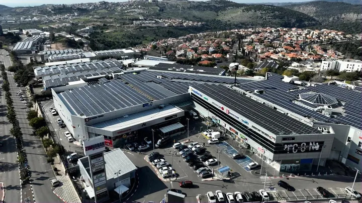

אנרגיה סולארית
אנרגיה סולארית
צים אנרגיה מתחדשת מפתחת, מקימה ומפעילה מערכות סולאריות (PV) על גגות מבנים ועל קרקע. החברה מפעילה כיום 13 מערכות סולאריות על גגות מרכזי הקניות בהספק כולל של 6.5 MW ומערכת סולארית קרקעית בבית שאן בהספק 1.2 MW, ומפתחת פרויקט סולארי משולב אגירה בבולגריה.

גגות סולאריים במרכז קניות של רני צים